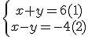
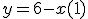
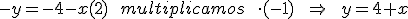
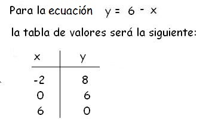
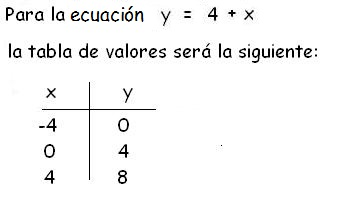

Método Gráfico
Este método para resolver sistemas de ecuaciones es uno de los más sencillos, aquí comprenderás el significado que tiene gráficamente la solución de un sistema de ecuaciones.

1) Expresa cada una de las ecuaciones en términos de y. Esto se hace sencillamente despejando la incógnita “y”, que quedará en función de la x. En el caso del sistema que estamos trabajando como ejemplo nos quedará así:
- 
- 
Las ecuaciones que utilizaremos son las que están en términos de "Y"
2) Construye una tabla de valores para hallar las coordenadas, asignando valores a "X" y luego ubícalas en la gráfica (Mínimo dos puntos).
 
{kind=link}
3) En un plano Cartesiano representa, con diferentes colores, las rectas que corresponden a cada ecuación, teniendo en cuenta que cada par de valores que has calculado corresponde a las coordenadas de cada punto.
Para este ejemplo, la representación gráfica será:

4) Las coordenadas del punto de corte de las rectas, son las solución del sistema de ecuaciones. En este caso, las coordenadas del punto de corte son: x=1 ; y=5
Es decir que la solución del sistema es el punto (1,5)
5) Verifica que las igualdades se cumplan reemplazando los valores hallados en el sistema original.
1) x + y = 6
1 +5 =6
6=6
2)
x – y= -4
1 -(5)= -4
-4 = -4
Para complementar te invitamos a ver el siguiente video con el profe Wil:
EVALÚO MIS AVANCES
Completa el procedimiento en cada paso.
Observa el sistema de ecuaciones:
x + y = 5 (1)
5x - 2y = 4 (2)